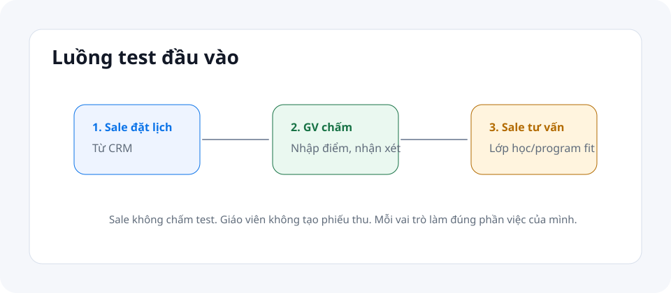
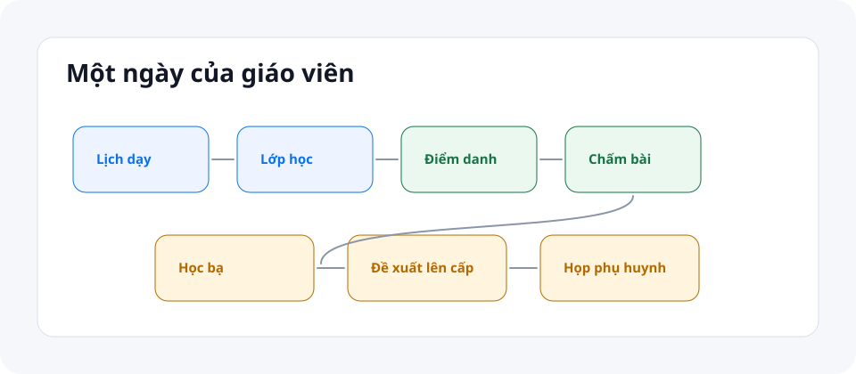

Hướng dẫn sử dụng cho Sale & Giáo Viên
Dành cho hai vai trò trực tiếp: Sale tư vấn tuyển sinh và Giáo Viên đứng lớp/chấm bài/đánh giá học sinh.
Sale
sale · CRM, tạo cơ hội, lịch test, ghi danh, cập nhật thông tin học sinh, xem lương.
Giáo Viên
giao_vien · lịch dạy, điểm danh, chấm bài, học bạ, chấm test, họp PH, đề xuất cấp độ.
1. Đăng nhập
- Mở ứng dụng nhân viên.
- Bấm Đăng nhập bằng tài khoản CMC EDU.
- Dùng email công ty
@cmcvn.edu.vn. - Vào giao diện đã lọc theo vai trò.

2. Lần đầu vào hệ thống: bắt đầu từ đâu?
Sale và giáo viên không dùng chung điểm bắt đầu. Hệ thống tự đưa mỗi vai trò vào menu chính của họ, nhưng vẫn cần kiểm tra theo danh sách dưới đây.
Sale: việc đầu tiên cần làm
- Kiểm tra đúng email công ty và đúng cơ sở được phân quyền.
- Mở CRM, xem các bước O1-O5 O1-O5 để hiểu khách đang ở bước nào.
- Kiểm tra khách/cơ hội đã được giao cho mình trước khi tạo mới.
- Thống nhất với quản lý cách cập nhật O1-O5, lý do mất, và thời điểm tạo lịch test.
- Mở Học sinh để biết nơi cập nhật hồ sơ sau khi khách đã được duyệt nhập học.
- Mở Phiếu lương của tôi để biết nơi xem lương cá nhân, không phải nơi tự chấm KPI.
Giáo viên: việc đầu tiên cần làm
- Kiểm tra đúng email công ty và đúng cơ sở được phân quyền.
- Mở Lịch dạy, xem buổi hôm nay/tuần này và lớp mình phụ trách.
- Mở Điểm danh để biết cách chọn buổi và lưu trạng thái học sinh.
- Mở Chấm bài, kiểm tra lớp nào có bài tập/bài nộp cần xử lý.
- Mở Học bạ, kiểm tra kỳ học, mẫu đánh giá và nơi nhập nhận xét.
- Mở Họp phụ huynh để biết lịch họp hoặc việc cần cập nhật trạng thái.
Checklist ngày đầu
| Vai trò | Cần thấy | Nếu không thấy |
|---|---|---|
| Sale | CRM, Học sinh, Phiếu lương của tôi. | Báo GĐ Kinh Doanh hoặc IT kiểm tra vai trò/cơ sở. |
| Giáo viên | Lịch dạy, Điểm danh, Chấm bài, Học bạ, Lớp học, Họp phụ huynh, Phiếu lương của tôi. | Báo GĐ Đào Tạo hoặc IT kiểm tra phân lớp/vai trò/cơ sở. |
3. Hướng dẫn cho Sale
Sale nhìn thấy CRM, Học sinh, Phiếu lương của tôi và một số trang mở chung ở chế độ xem.
CRM là công việc chính
Xem/tạo cơ hội, tạo liên hệ, chuyển giai đoạn O1 → O5, đánh dấu mất hoặc mở lại, tạo lịch test cho khách.
Ghi danh & cập nhật học sinh
Ghi danh học sinh vào lớp và cập nhật thông tin học sinh như liên hệ, hồ sơ cơ bản.

Luồng thao tác trọn vẹn: tư vấn một khách mới đến khi ghi danh
- Mở CRM, kiểm tra các bước O1-O5 để tránh tạo trùng khách theo tên hoặc số điện thoại.
- Tạo cơ hội mới với thông tin liên hệ tối thiểu và chương trình quan tâm nếu đã rõ.
- Sau mỗi lần tư vấn, cập nhật bước O1 -> O5 để quản lý nhìn được tiến độ.
- Nếu khách cần test đầu vào, tạo lịch test trong CRM. Không tự chấm test.
- Khi khách quyết định học, phối hợp Kế Toán/Quản Lý để duyệt phiếu thu. Học sinh được tạo tự động sau bước duyệt, không tạo thủ công.
- Mở Học sinh để cập nhật thông tin liên hệ nếu được phân quyền.
- Mở Lớp học, chọn lớp phù hợp và thực hiện ghi danh nếu lớp còn chỗ và đúng chương trình.
- Kiểm tra lại trạng thái cơ hội và thông tin học sinh sau ghi danh.
CRM, học sinh và ghi danh thường chứa tên, số điện thoại, mã học sinh. Vì vậy tài liệu dùng hình minh họa đã ẩn dữ liệu thay vì chụp bảng thật.


Luồng thao tác trọn vẹn: một ngày làm việc của Sale
- Mở CRM, xem danh sách cơ hội của mình và ưu tiên khách ở O3/O4/O5.
- Cập nhật ghi chú hoặc trạng thái sau mỗi lần gọi/tư vấn để quản lý không phải hỏi lại.
- Với khách mới, kiểm tra trùng trước, sau đó tạo cơ hội và nhập thông tin tối thiểu.
- Với khách cần kiểm tra đầu vào, tạo lịch test và báo giáo viên/trưởng bộ môn theo quy trình cơ sở.
- Với khách đồng ý học, phối hợp Kế Toán/Quản Lý để xử lý phiếu thu; không tự tạo/duyệt phiếu thu.
- Sau khi nhập học, cập nhật hồ sơ học sinh và ghi danh vào lớp phù hợp nếu được phân quyền.
- Cuối ngày, kiểm tra lại các bước O1-O5 để không còn cơ hội thiếu bước, thiếu ghi chú hoặc kẹt lịch test.

4. Hướng dẫn cho Giáo Viên
Giáo viên nhìn thấy Lịch dạy, Điểm danh, Chấm bài, Học bạ, Lớp học, Họp phụ huynh và Phiếu lương của tôi.
Lịch dạy
Xem lịch dạy của mình theo buổi/ngày/tuần.
Điểm danh
Chọn buổi học, đánh dấu học sinh có mặt/vắng, lưu.
Chấm bài
Tạo/phát hành bài tập, xem bài nộp, chấm điểm, phát hành điểm.
Học bạ
Xem mẫu/kỳ học, nhập đánh giá định tính, tính điểm tổng kết.
Họp phụ huynh
Đặt lịch họp và đổi trạng thái buổi họp cho lớp phụ trách.
Đề xuất cấp độ
Đề xuất nâng cấp độ trong mục Học bạ; quyết định thuộc Trưởng Bộ Môn/GĐ Đào Tạo.


Luồng thao tác trọn vẹn: một buổi dạy từ lịch đến học bạ
- Mở Lịch dạy để xem buổi hôm nay hoặc tuần này.
- Vào đúng buổi học, mở Điểm danh, đánh dấu có mặt/vắng và lưu.
- Mở Chấm bài, tạo bài tập nếu cần, phát hành cho học sinh làm.
- Khi học sinh nộp bài, mở danh sách bài nộp, chấm điểm và phát hành điểm để học sinh thấy.
- Mở Học bạ, nhập đánh giá định tính theo kỳ học/mẫu đánh giá.
- Tính điểm tổng kết khi dữ liệu điểm đã đủ.
- Nếu học sinh đủ điều kiện nâng cấp độ, tạo đề xuất trong Học bạ. Giáo viên chỉ đề xuất, không quyết định.
- Nếu cần trao đổi với phụ huynh, mở Họp phụ huynh, đặt lịch và cập nhật trạng thái buổi họp.
Ảnh màn hình giáo viên hiện tại dùng để chỉ vị trí màn hình. Các bảng học sinh/bài nộp thật cần dùng dữ liệu demo đã ẩn danh trước khi chụp.

Luồng thao tác trọn vẹn: một ngày làm việc của Giáo viên
- Mở Lịch dạy vào đầu ngày để kiểm tra lớp, giờ học, phòng học.
- Trước giờ học, mở Lớp học nếu cần xem danh sách học sinh hoặc bối cảnh lớp.
- Trong/sau buổi học, mở Điểm danh, chọn đúng buổi và lưu trạng thái.
- Sau buổi học, mở Chấm bài để tạo bài tập, xem bài nộp, chấm và phát hành điểm.
- Mở Học bạ để nhập nhận xét định tính khi đến kỳ đánh giá.
- Nếu học sinh đủ điều kiện lên cấp độ, gửi đề xuất; quyết định thuộc trưởng bộ môn/GĐ Đào Tạo.
- Nếu có trao đổi phụ huynh, mở Họp phụ huynh và cập nhật trạng thái sau buổi họp.


Luồng thao tác trọn vẹn: chấm bài test đầu vào
- Sale/CSKH tạo lịch test đầu vào cho khách trong CRM.
- Giáo viên nhận thông tin bài test cần chấm theo phân công vận hành.
- Mở màn hình chấm test theo luồng được phân quyền, nhập điểm và nhận xét nếu có.
- Lưu kết quả để bộ phận tuyển sinh dùng khi tư vấn lớp/chương trình phù hợp.
5. KPI & phiếu lương
KPI của Sale
Phiếu KPI do Nhân sự/quản lý khởi tạo và hệ thống tự tính theo dữ liệu. Sale xem kết quả qua Nhân sự/quản lý, không tự chấm/xác nhận/duyệt.
KPI của Giáo Viên
Phiếu KPI do Nhân sự/quản lý khởi tạo và hệ thống tự tính. Giáo viên xem kết quả, không có menu tự chấm riêng.
6. Lưu ý nhanh
| Vai trò | Làm được | Không làm |
|---|---|---|
| Sale | CRM, ghi danh, cập nhật học sinh, xem lương. | Chấm test, tài chính, tạo học sinh thủ công, lớp/học vụ, KPI duyệt. |
| Giáo viên | Lịch dạy, điểm danh, chấm bài, học bạ, chấm test, họp PH, đề xuất cấp độ, xem lương. | Tạo lớp, quyết định cấp độ, CRM, tài chính, CSKH, phụ huynh, nhân sự, đổi quà. |